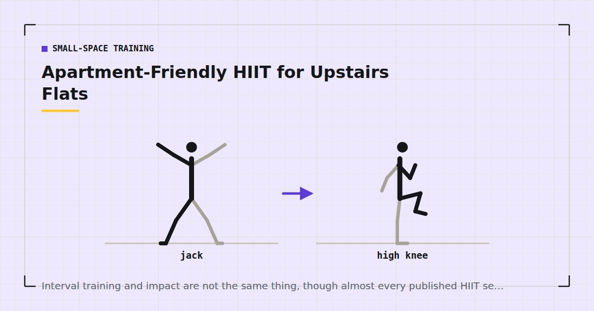

Small-Space Training
Apartment-Friendly HIIT for Upstairs Flats
Interval training and impact are not the same thing, though almost every published HIIT session conflates them. Here is the format rebuilt for a floor somebody else lives under.

Living above someone changes what training is available in a way that is rarely acknowledged. Most published interval sessions open with burpees, and a burpee in a first-floor flat is a social event for everyone below you.
The good news is that the noise and the training effect are separable. The bad news is that separating them takes a little more care than simply removing the jumps.
What actually makes noise
Three distinct things, and only one of them is jumping.
Impact. Your bodyweight landing on the floor. The obvious one, and the one removing jumps solves.
Vibration through the structure. Even without jumping, rapid repeated force through the floor transmits into the joists. This is why fast mountain climbers can be audible below despite involving no jumping at all — the hands are drumming.
Airborne noise. Your feet slapping, your breathing, and anything you drop. Usually the least significant, but worth knowing about at eleven at night.
Most advice addresses only the first. Addressing all three is what actually makes a session quiet.
Three principles
1. Every foot stays in contact. No exercise where both feet leave the ground, and none where one foot lands hard. The full substitution list is in no-jump cardio.
2. Slow beats fast for anything on the hands. A slow, long-reach mountain climber is harder than a frantic one and makes a fraction of the noise. Speed on the hands is where the vibration comes from.
3. Intensity comes from muscle recruitment, not tempo. This is the key substitution. Instead of moving faster, use movements that recruit more muscle at once, or extend the time under tension. A continuous squat with a three-second descent is quieter and harder than a fast one.
The session
Two minutes warming up with easy marching and ten slow squats. Then five exercises, forty seconds work and twenty rest, four rounds, with sixty seconds between rounds. About twenty-two minutes.
Fast step-back lunge
Brisk pace, both feet staying down. Replaces jump lunges entirely.
Continuous squat to overhead reach
No pause at either end, arms reaching overhead at the top. Adding the upper body is what drives the heart rate.
Push-up to shoulder tap
Replaces the burpee's full-body demand without the drop and jump.
Lateral skater step
Wide step to each side with the trailing leg crossing behind. Needs about two metres of lateral space — see how much floor space you need.
Bear crawl, forward and back
Hands and feet, knees just off the floor. Quiet, demanding, and the closest thing to a burpee substitute in terms of how it feels.
Checking you are working hard enough
This is the genuine risk with low-impact interval work: it is much easier to under-do than a session built on jumping, because nothing forces the effort.
Use the talk test. During a work interval you should be able to get out a few words but not a full sentence. Mayo Clinic describes this as the practical marker of vigorous intensity and it needs no equipment.1 If you can hold a conversation, the interval is not vigorous, whatever the exercise list claims.
Interval training at genuine intensity produces documented improvements in cardiorespiratory fitness.2 Interval training at moderate intensity is a moderate workout with unnecessary stopping. The exercises do not determine which one you did — the effort does.
The risk with quiet training is not that it is less effective. It is that it is easier to do half-heartedly without noticing.
Working with your floor, not against it
Three adjustments that cost nothing and make a real difference.
Train near a supporting wall. Floors deflect most at the centre of a span and least near their supports. Moving your mat from the middle of the room to within a metre of a load-bearing wall reduces transmitted vibration measurably, for free.
Cover your hands as well as your feet. Plank work, mountain climbers and bear crawls all put repeated force through the palms. A mat that covers only where your feet go is solving half the problem.
Choose density over thickness. A thick, soft foam mat compresses and can transmit more than a denser, thinner one. Which mats actually help is covered in exercise mats for noise reduction.
When to train
The same noise is a different problem at different hours, and this is a social question rather than an acoustic one.
Between about 8am and 9pm, a genuinely low-impact session is very unlikely to trouble anyone. Before 8am or after 10pm, be more conservative — drop the bear crawls and the lateral steps, both of which involve some scuffing, and keep to the standing and floor work in the silent ab workout.
If you have a neighbour you are on speaking terms with, simply asking is worth more than any amount of guesswork. People are generally far more accommodating about a known twenty-minute window than about unexplained thumping.
How often
Two or three sessions a week, not on consecutive days. Interval work at real intensity competes for recovery with strength training, so alternate rather than stacking — the scheduling logic is in the weekly home workout schedule.
Two sessions of this covers a solid share of the vigorous-activity half of adult guidance.3 The strength half needs separate sessions, which is what the three-day split is for.
An eight-week progression
The most common failure with any interval session is running the identical version for months and expecting continued improvement. Four rounds of the same five exercises will stop producing adaptation within about six weeks.
Progress it by shortening the rest before lengthening the work, because rest is where recovery happens and removing it raises the average intensity across the whole session. Weeks one and two: three rounds at forty seconds on, twenty off, keeping effort moderate while you learn the movements. Weeks three and four: add the fourth round. Weeks five and six: move to forty-five seconds on and fifteen off, keeping four rounds. Weeks seven and eight: hold that timing and switch to harder variations — deficit lunges with the front foot elevated, push-ups with the feet raised, bear crawls over a longer distance.
After week eight, take an easier week and then restart from the week-five settings with the harder variations in place. Whether bodyweight trainees genuinely need structured deloads is a reasonable question, and the criteria are in deload weeks for home training.
What not to do is add a sixth exercise. Five movements covering the whole body is already enough variety for a twenty-minute session, and a sixth simply reduces how many rounds you complete.
Where to go next
For the full worked interval session with an eight-week progression, see the 20-minute no-jump HIIT workout. For the complete approach to training quietly, see quiet home workouts.
Frequently asked questions
Can you do HIIT in an apartment without annoying neighbours?
Yes. Remove all jumping, slow down anything performed on the hands, train nearer a supporting wall rather than the middle of the room, and cover both your hands and your feet with a dense mat. Intensity comes from muscle recruitment rather than from impact.
What makes noise during a home workout?
Three things: impact from landing, vibration transmitted through the floor structure by rapid repeated force, and airborne noise such as feet slapping. Removing jumps only addresses the first, which is why fast mountain climbers can still be audible below.
How do I know if my low-impact HIIT is intense enough?
Use the talk test. During a work interval you should manage a few words but not a full sentence. Low-impact work is easier to under-do than jumping-based sessions because nothing forces the effort.
Is it better to work out near a wall in an apartment?
Yes. Floors deflect most at the centre of a span and least near their supports, so moving your mat to within a metre of a load-bearing wall reduces transmitted vibration at no cost.
What time of day should I work out in a flat?
Between about 8am and 9pm a genuinely low-impact session is unlikely to trouble anyone. Outside those hours, drop anything involving scuffing or lateral movement and keep to standing and floor work.
How often should I do apartment HIIT?
Two or three sessions a week on non-consecutive days. Interval work at real intensity competes with strength training for recovery, so alternate rather than stacking them.
Sources and further reading
- Mayo Clinic. Exercise intensity: How to measure it.
- Wu ZJ, Wang ZY, Gao HE, Zhou XF, Li FH. “Impact of high-intensity interval training on cardiorespiratory fitness, body composition, physical fitness, and metabolic parameters in older adults: A meta-analysis of randomized controlled trials.” Experimental Gerontology, 2021;150:111345. PubMed.
- World Health Organization. WHO Guidelines on Physical Activity and Sedentary Behaviour. 2020.
- NHS. Physical activity guidelines for adults aged 19 to 64.
Comments
Comments are not enabled yet. Add a hosted comment embed (Disqus, Commento, Giscus) inside this container when you are ready.